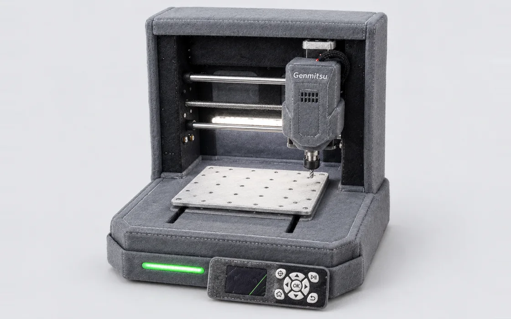

Herramientas del Fab Lab
Elige la máquina, conéctala por USB y trabaja desde el navegador. Sin instalar nada.

CNC
PCB desde KiCad: pistas, hoyos y contorno. Calibración guiada y gemelo 3D.
- Máquina
- Genmitsu Cubiko
- Firmware
- GRBL 1.1
- Estado
- Lista
Láser
Corte láser
Corte, marcado y grabado desde SVG o imagen. Materiales, encuadre y gemelo 3D.
- Máquina
- xTool S1 40 W
- Estado
- En prueba
3D
Impresión 3D
Enviar G-code y vigilar la impresión.
- Estado
- En preparación
Sublimado
Sublimado
Plantillas y tiempos por material.
- Estado
- En preparación